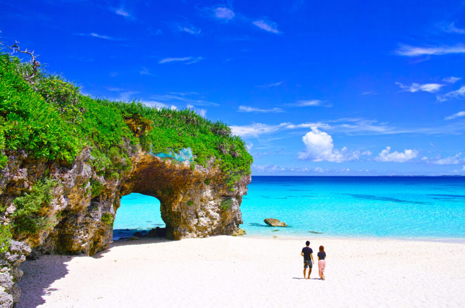

Se delicie nas praias e no prato típico!
Geografia de Okinawa
Okinawa é a província mais ao Sul do Japão, fica fora do eixo das ilhas principais, e faz aparte de um arquipélago de 169 ilhas, a região é chamada de arquipélago Ryukyu e sua capital é a cidade de Naha.
Okinawa tem um clima subtropical, com temperaturas que podem variar entre 10°C e 40°C. O clima é menos oscilante do que em outras regiões do Japão, e as temperaturas no inverno são mais moderadas.
Um pouco sobre a História local...
Okinawa, conhecida como o antigo Reino de Ryūkyū, tem uma história única e fascinante. Sua posição estratégica no globo, os séculos de amizade com a China, a anexação ao Império Japonês e o papel como território-chave durante a Segunda Guerra Mundial são apenas alguns dos aspectos que compõem a longa história do Arquipélago Ryukyuano.
Entre os séculos 15 e 19, Okinawa foi um reino independente conhecido como Ryukyu. Durante esse período, o comércio marítimo com a China favoreceu intercâmbios culturais e políticos.
Em 1872, Okinawa foi anexada ao Japão e sete anos depois ganhou o status de província.

Durante a Segunda Guerra Mundial, Okinawa foi palco de uma longa e sangrenta batalha entre o Exército dos Estados Unidos e o Corpo de Fuzileiros Navais. A batalha durou quase três meses e mais de 200 mil pessoas morreram. Após a guerra, Okinawa ficou sob domínio dos Estados Unidos por 27 anos, período em que foram instaladas bases militares na ilha.
Em 1972, Okinawa foi devolvida ao Japão, mas os Estados Unidos ainda mantêm uma presença militar na ilha. A posição estratégica de Okinawa entre o Japão, China e as duas Coreias faz com que a presença militar norte-americana continue a ser um pilar da política externa defensiva do Japão.
Turismo
Pontos Turísticos Que Eu Mais Quero Ir:
Aquário de Okinawa
O Aquário Churaumi de Okinawa faz parte do Parque de Exposições do Oceano e é considerado um dos maiores e melhores aquários do mundo. Seus tanques são grandes o suficiente para acomodar tubarões-baleia. Localizado na costa da Península de Motobu, o aquário foi reconstruído em 2002 e atualmente abriga 710 espécies de vida submarina.
Soki Sobá
Soki são costelas de porco preparadas em fogo baixo com awamori (um tipo forte de shochu), molho de soja e açúcar. Elas são adicionadas a uma sopa de massa coberta com cebolinha e gengibre em conserva. Consideradas o lámen dos trópicos.
Na ilha, é possível até mesmo fazer uma oficina rápida, de 2h, para aprender a sovar a massa e cozinhar seu próprio prato (mas os segredos do caldo eles não contam…).
Castelo de Shuri
O castelo foi construído no século XIII por Shunbajunki, o segundo rei de Chuzan, e teve um papel fundamental em vários dos conflitos dos séculos seguintes. O Castelo de Shuri foi destruído várias vezes ao longo dos séculos, mas ressurgiu das cinzas todas as vezes. Mais recentemente, o castelo foi bombardeado na Batalha de Okinawa em 1945. O castelo que se vê hoje foi reconstruído em 1992. Ele fica no topo de uma colina, proporcionando uma vista panorâmica de Naha. O interior do edifício principal foi restaurado de acordo com seu estilo original, com museus modernos nos salões norte e sul. As exposições dão vida à história do Reino de Ryukyu. Os salões norte e sul foram destruídos em um incêndio no dia 31 de outubro de 2019, e estão, no momento, sendo preparados para o processo de restauração, com conclusão prevista para 2026. Durante a reconstrução, os visitantes poderão fazer um passeio para acompanhar o processo.